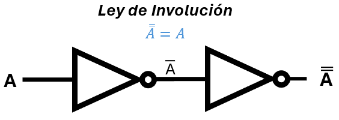

Unidad 3: Fundamentos de Cómputo - Lección 24
🏛️ Álgebra Formal y Unicidad: Axiomas, Involución y Dualidad
A lo largo de todo este curso, nuestra herramienta de confianza para comprobar si teníamos razón ha sido la Tabla de Verdad. Cada vez que queríamos estar seguros de que un circuito funcionaba, evaluábamos todos los casos posibles (00, 01, 10, 11). Era un método infalible… mientras los cables fueran pocos.
Observa estas dos imágenes familiares de las Leyes de De Morgan que exploramos en la Unidad 2. En su momento, las comprobamos con tablas de verdad de 4 filas:

Fig. 1: Comprobación empírica: probamos los 4 estados posibles para verificar que \(\overline{A + B} = \bar{A} \cdot \bar{B}\).

Fig. 2: Comprobación empírica: probamos los 4 estados posibles para verificar que \(\overline{A \cdot B} = \bar{A} + \bar{B}\).
🛑 El Límite de la Fuerza Bruta
Hacer tablas de verdad es un método empírico (de "fuerza bruta"). Funciona perfecto para 2 variables (4 filas) o 3 variables (8 filas).
Pero, ¿qué pasa en el mundo real? Un procesador moderno evalúa ecuaciones lógicas de 64 variables. ¡Una tabla de verdad para 64 variables tendría 18,4 trillones de filas! Si revisaras una fila por segundo, te tomaría 584.000 años comprobar si una Ley de De Morgan funciona en ese circuito.
Hoy dejaremos atrás las tablas de verdad. Bienvenidos al Álgebra Formal, donde las reglas de la lógica se convierten en axiomas y los teoremas se demuestran, no se prueban.
🔗 Recordatorio: el isomorfismo está con nosotros
En la Lección 21 descubrimos que la lógica, la teoría de conjuntos y los circuitos electrónicos son isomorfos: las mismas reglas gobiernan los tres mundos. Los axiomas que hoy vamos a formalizar son los pilares de ese isomorfismo. Así que cuando estudies cada propiedad, recuerda que no solo estás aprendiendo matemática abstracta, sino también la estructura profunda de cómo piensan los conjuntos, cómo se comportan las compuertas y cómo se diseñan los procesadores.
1. Demostrar vs. Comprobar
Un técnico comprueba un circuito probando sus entradas (0s y 1s). Un ingeniero matemático demuestra que el circuito es perfecto usando únicamente las reglas fundamentales de la lógica, sin probar un solo número.
♟️ El Ajedrez Matemático: Axiomas y Teoremas
Para hacer una demostración formal, el Álgebra de Boole se comporta como un juego de ajedrez:
- Los Axiomas (Postulados): Son las reglas básicas del juego (ej: "el caballo se mueve en L"). Son verdades absolutas que aceptamos sin discutir.
- Los Teoremas: Son las jugadas maestras. Son verdades complejas que SÍ debemos demostrar combinando lógicamente los axiomas.
📚 Nuestro Inventario de Axiomas
En la Lección 21 (Isomorfismo) te presentamos las 5 propiedades fundamentales. Hoy las elevaremos a la categoría de Axiomas de Huntington (las reglas de nuestro tablero).
📐 Historia STEAM: El Limpiador de las Matemáticas
George Boole inventó las reglas, pero dejó un desastre. Su álgebra original era confusa y tenía demasiadas reglas redundantes. En 1904, un brillante matemático estadounidense de Harvard llamado Edward Vermilye Huntington se obsesionó con la "limpieza".
Huntington se hizo una pregunta de ingeniero: "¿Cuál es la cantidad mínima absoluta de reglas que necesito para que todo este universo de ceros y unos funcione sin colapsar?"
Destiló todo el trabajo de Boole en un puñado de postulados perfectos, independientes y no contradictorios. Si un sistema cumple estas 5 reglas que verás abajo, ¡es oficialmente un Álgebra de Boole! Gracias a su obsesión por la eficiencia, hoy no tienes que memorizar 50 leyes, sino solo estos 5 axiomas.
| Axioma | Forma OR ($+$) | Forma AND ($\cdot$) |
|---|---|---|
| A1. Conmutatividad | $A + B = B + A$ | $A \cdot B = B \cdot A$ |
| A2. Asociatividad | $(A + B) + C = A + (B + C)$ | $(A \cdot B) \cdot C = A \cdot (B \cdot C)$ |
| A3. Identidad (Neutro) | $A + 0 = A$ | $A \cdot 1 = A$ |
| A4. Distributividad | $A + (B \cdot C) = (A + B) \cdot (A + C)$ | $A \cdot (B + C) = (A \cdot B) + (A \cdot C)$ |
| A5. Complemento | $A + \bar{A} = 1$ | $A \cdot \bar{A} = 0$ |
2. La Gran Demostración: La Unicidad del Complemento
Vamos a hacer nuestra primera demostración formal. Vamos a resolver una duda filosófica profunda:
"Si tengo una señal $A$, ¿cuántos inversos (NOT) puede tener?"
La lógica nos dice que el opuesto del blanco es negro. Pero, ¿cómo lo demostramos matemáticamente sin usar tablas de verdad?
🏛️ Teorema: El complemento de una variable es único.
El Método (Reducción al absurdo): Imaginemos un universo extraño donde la variable $A$ tiene DOS inversos diferentes. Llamemos al primero $\bar{A}$ y al segundo $X$.
Si ambos son inversos legítimos de $A$, ambos deben obedecer ciegamente el Axioma 4 (Complemento):
- Para $\bar{A}$: $A + \bar{A} = 1$ y $A \cdot \bar{A} = 0$
- Para $X$: $A + X = 1$ y $A \cdot X = 0$
Comencemos a jugar con nuestra variable intrusa $X$ justificando cada paso solo con nuestros Axiomas:
¡Magia Matemática! Comenzamos asumiendo que $X$ era un inverso diferente, y al operar descubrimos que $X$ es exactamente $\bar{A}$. Hemos demostrado, para siempre y para cualquier cantidad de variables, que el inverso de una señal lógica es único.
🔌 Significado físico: ¿Por qué es tan importante?
La unicidad del complemento no es solo un resultado matemático abstracto. En el mundo del hardware, este teorema garantiza que la compuerta NOT (inversor) es una función perfectamente definida y determinista:
- Una entrada, una sola salida: Cuando conectas una señal \(A\) a la entrada de un inversor (chip 7404), la salida será única y predecible. No existe ambigüedad ni posibilidad de que dos señales diferentes sean ambas el inverso de \(A\).
- Sin sorpresas: En un circuito físico, esto significa que si mides la salida del inversor, puedes estar seguro de que es la negación correcta, sin importar el ruido o las variaciones de fabricación (dentro de los márgenes de tolerancia).
- Base de la lógica determinista: Sin esta unicidad, los sistemas digitales serían impredecibles. Cada vez que negaras una señal, podrías obtener resultados distintos, lo que haría imposible diseñar computadoras confiables.
En otras palabras: la demostración matemática que acabas de presenciar es la razón de fondo por la cual puedes comprar un chip 7404, conectarle una señal, y saber con certeza absoluta qué voltaje aparecerá en su salida. ¡La matemática garantiza la física!
🍎 Rincón del Docente: Cómo enseñar a "Demostrar" sin causar pánico
La transición de "hacer tablas de verdad" a "demostrar teoremas con axiomas" es el mayor abismo cognitivo para un estudiante. De repente, sienten que la matemática se volvió un bloque de texto incomprensible. Como docente, tu misión es quitarles el miedo usando analogías de sistemas cerrados que ellos ya dominan: Los Deportes o los Videojuegos.
El Juego del Abogado Deportivo
Para enseñarles qué es una demostración formal, haz esta dinámica en clase antes de mostrarles la primera ecuación de Boole:
- Los Axiomas (Las Reglas Intocables): Diles: "En el fútbol, un axioma es: 'Solo el portero puede tocar el balón con las manos en el área'. Esa regla no se discute, se acepta".
- El Teorema (Lo que hay que demostrar): Diles: "Quiero que me demuestren lógicamente esta afirmación: 'Si un jugador de campo toca el balón con la mano en su propia área, es penalti'".
- La Demostración (Paso a Paso): Pídeles que construyan el argumento usando SÓLO las reglas del reglamento de la FIFA (Axiomas), paso por paso, sin saltarse ninguno ni inventar reglas nuevas.
- El "Q.E.D.": Cuando lleguen a la conclusión innegable, explícales que acaban de hacer una Demostración Formal.
La lección vital para el alumno: "En el álgebra de Boole, los 5 Axiomas de Huntington son nuestro reglamento de la FIFA. No puedes dar un solo paso en la ecuación si no puedes señalar qué regla del reglamento te da permiso para hacerlo. Una demostración matemática no es un cálculo aburrido; es un juicio donde tú eres el abogado y los axiomas son tus leyes".
3. Consecuencia Directa: La Ley de Involución
Ahora que hemos demostrado que el inverso es único, ¿qué pasa si negamos una señal que ya estaba negada?
Sabemos que el inverso de $A$ es $\bar{A}$. Por lo tanto, el inverso de $\bar{A}$ tiene que ser $A$. Al escribir esto matemáticamente y dibujarlo en circuitos, obtenemos uno de los teoremas más famosos: la Ley de Involución (o Doble Negación).
🔄 El "Buffer" Inadvertido

Fig. 3: La Ley de Involución en hardware. Matemáticamente: $\bar{\bar{A}} = A$.
📐 Demostración algebraica de la involución
Usando los axiomas que acabamos de listar, podemos probar formalmente que \(\bar{\bar{A}} = A\).
Sabemos que \(\bar{A}\) es el complemento de \(A\), es decir, cumple:
- \(A + \bar{A} = 1\) y \(A \cdot \bar{A} = 0\) (Axioma de Complemento).
Ahora preguntémonos: ¿cuál es el complemento de \(\bar{A}\)? Por definición, un complemento de \(\bar{A}\) es un elemento \(X\) tal que:
- \(\bar{A} + X = 1\) y \(\bar{A} \cdot X = 0\).
Pero observa que \(A\) mismo cumple esas dos condiciones (por la conmutatividad y el axioma de complemento):
- \(\bar{A} + A = A + \bar{A} = 1\) (Conmutatividad + Complemento).
- \(\bar{A} \cdot A = A \cdot \bar{A} = 0\) (Conmutatividad + Complemento).
Como el complemento de \(\bar{A}\) es único (teorema demostrado más arriba), el único elemento que puede ser su complemento es \(A\). Por lo tanto:
Esta es la Ley de Involución (o Doble Negación). En palabras: negar dos veces una señal te devuelve la señal original.
El Ojo del Ingeniero: Podrías pensar: "¿Para qué voy a gastar dos compuertas NOT si la señal sale exactamente igual que como entró? ¡Mejor pongo un cable directo!".
En el mundo ideal del álgebra, tienes razón, es un desperdicio. Pero en la ingeniería de silicio, conectar dos inversores seguidos tiene un propósito vital: se le llama Buffer no inversor. Se usa para "limpiar" una señal que viene débil, inyectándole corriente fresca de la fuente (Vcc), o para introducir un pequeño retraso de tiempo intencional (recuerda el retardo de propagación de la Lección 22) para que dos señales se sincronicen perfectamente al llegar a otro chip.
¡Las matemáticas te dicen que se anulan, pero la física te dice que te dan tiempo y fuerza!
🛠️ Del Teorema al Silicio: El Buffer
Acabamos de demostrar que \(\overline{\overline{A}} = A\). En un examen de matemáticas, simplemente tacharías las dos barras. Pero en el laboratorio, esto representa dos caminos físicos para obtener un Buffer:
Conectar dos inversores NOT en serie. La lógica se cancela, pero gastas dos compuertas para obtener el mismo valor.
Usar un chip Buffer dedicado. Es una sola etapa diseñada específicamente para lo que aprendiste en la Lección 17: aumentar el Fan-out.
¡La Ley de Involución es la base matemática que justifica la existencia del Buffer en tu catálogo de componentes!
4. El Principio de Dualidad (El atajo supremo)
Si miras la tabla de Axiomas de arriba, notarás un patrón hermoso: vienen en parejas. A esta simetría perfecta de la naturaleza digital la llamamos el Principio de Dualidad.
La regla es asombrosamente sencilla: Si tienes una ecuación o teorema válido en álgebra de Boole, puedes crear instantáneamente otro teorema válido si sigues tres pasos ciegos:
- Cambia todos los signos de suma ($+$) por producto ($\cdot$).
- Cambia todos los signos de producto ($\cdot$) por suma ($+$).
- Cambia todos los unos ($1$) por ceros ($0$) y los ceros ($0$) por unos ($1$).
(Ojo: ¡NO cambies las letras ni sus negaciones! Si hay una $\bar{A}$, se queda como $\bar{A}$).
🤯 El momento "¡Ajá!": Ya usabas la Dualidad
¿Recuerdas las Lecciones 15 y 18, donde aprendiste a extraer ecuaciones de una tabla de verdad usando Minterms (SOP) y Maxterms (POS)?
Te dijimos que eran "dos caras de la misma moneda". Ahora tienes el lenguaje matemático para entender por qué:
- En la Suma de Productos (SOP), buscabas los 1s, multiplicabas las variables (AND) y luego sumabas los grupos (OR).
- En el Producto de Sumas (POS), buscabas los 0s, sumabas las variables (OR) y luego multiplicabas los grupos (AND).
¡El método POS es el DUAL exacto del método SOP!
Cambiaste los 1s por 0s, los ANDs por ORs, y los ORs por ANDs. Sin saberlo, aplicaste las tres reglas del Principio de Dualidad a escala industrial para diseñar hardware. La Dualidad garantiza que ambos circuitos (SOP y POS) se comportarán idénticamente.
🎭 El "2x1" Matemático: Obteniendo teoremas gratis
El poder real de la Dualidad es que te ahorra la mitad del trabajo. Si logras demostrar que una ecuación es cierta (como hicimos arriba con la Unicidad), la versión Dual de esa ecuación también será cierta automáticamente, ¡sin necesidad de hacer otra demostración!
Mira esta transformación instantánea:
- En la Lección 22 comprobamos la Tautología de Dominación:
$A + 1 = 1$ - Si le aplicamos los tres pasos ciegos de la Dualidad (cambiamos $+$ por $\cdot$, y $1$ por $0$), obtenemos inmediatamente:
$A \cdot 0 = 0$
¡Magia! Acabamos de descubrir la ecuación de la Contradicción gratis, sin necesidad de probarla con tablas de verdad ni armar el circuito. La Dualidad garantiza que es matemáticamente perfecta.
✍️ Tu turno: Aplica el principio de dualidad
Sabemos que la Primera Ley de De Morgan es:
Usa los tres pasos del principio de dualidad para obtener la Segunda Ley de De Morgan. Recuerda:
- Cambia \( \cdot \) por \( + \) y viceversa.
- Cambia \(0\) por \(1\) y viceversa.
- Deja las letras y sus negaciones como están.
🔍 Ver solución
Paso a paso:
Partimos de \(\overline{A \cdot B} = \bar{A} + \bar{B}\).
1. Cambiamos \(\cdot\) por \(+\) y \(+\) por \(\cdot\) en ambos lados:
\(\overline{A + B} = \bar{A} \cdot \bar{B}\)
2. No hay constantes \(0\) o \(1\) que cambiar, así que el resultado es:
¡Esa es exactamente la Segunda Ley de De Morgan!
🌍 Visión de Futuro: La Dualidad mueve al mundo
Cambiar \(+\) por \(\cdot\) y \(0\) por \(1\) parece un simple juego de espejos en nuestra protoboard. Sin embargo, el concepto de "Dualidad Matemática" que acabas de aprender es una de las fuerzas más poderosas de la ingeniería moderna y las ciencias de la computación.
El "Lado Oscuro" de los Problemas (Programación Lineal)
Imagina que eres el ingeniero jefe de logística de Amazon y tienes que resolver un problema monstruoso: "¿Cómo distribuir 10 millones de paquetes gastando la menor cantidad de gasolina posible?" (Minimización).
A veces, resolver ese problema directamente toma años de cálculo en una supercomputadora. Pero los matemáticos usan un truco inspirado en este mismo Principio de Dualidad: transforman el problema original en su "Dual".
- El problema de "Minimizar Gasolina" se transforma en un problema espejo: "¿Cómo Maximizar las ganancias de la flota?".
- Las "restricciones de tráfico" se convierten en "rutas libres".
- Las "sumas" de costos se vuelven "multiplicaciones" de eficiencia.
Lo asombroso es que el problema Dual suele ser 100 veces más fácil de resolver para la computadora. Y cuando la computadora encuentra la respuesta al problema Dual... ¡Esa respuesta es exactamente la misma que la del problema original difícil!
✨ La Lección del Ingeniero
La Dualidad nos enseña que todo problema complejo tiene un "gemelo invertido" escondido en las matemáticas. Si un circuito lógico, un algoritmo de Inteligencia Artificial o un problema de logística es demasiado difícil de resolver por el camino directo... ¡aplícale la dualidad, resuélvelo al revés y la solución será tuya!
💰 Recordatorio: El ahorro está en los axiomas
En la Lección 21 vimos con detalle cómo la propiedad distributiva se traduce en ahorro de hardware. Vale la pena recordarlo: la expresión \(A \cdot (B + C)\) requiere 2 compuertas (una OR y una AND), mientras que su forma expandida \((A \cdot B) + (A \cdot C)\) necesita 3 compuertas (dos AND y una OR). Saber factorizar no es solo álgebra: es reducir el costo de fabricación, el consumo de energía y el espacio en la placa.
Este es solo un ejemplo de cómo los axiomas del álgebra de Boole no son reglas abstractas, sino herramientas concretas de optimización que los ingenieros usan a diario para diseñar circuitos más eficientes.
🎧 Podcast: Conversación entre Expertos
Dos docentes analizan el salto cognitivo que supone abandonar la "zona de confort" de las tablas de verdad para adentrarse en el mundo de las demostraciones formales. Comparten analogías lúdicas para presentar los Axiomas de Huntington como las reglas de un juego de ajedrez lógico, donde cada movimiento debe justificarse con una regla previa. Además, destacan la elegancia de la demostración de la "Unicidad del Complemento" como una herramienta pedagógica clave para formar ingenieros que no solo aceptan fórmulas porque "funcionan", sino que aprenden a deducirlas por sí mismos, desarrollando así el pensamiento crítico y la confianza en su propio razonamiento.
🪪 Tarjeta de Identidad del Prompt Ético
Usa esta guía para pedirle a una Inteligencia Artificial que te ayude a estudiar y generar demostraciones formales paso a paso.
📝 Mi Fórmula de 4 Pasos:
💡 Ejemplo de Prompt:
"Comprendí que las tablas de verdad no son escalables para 64 bits, y que por eso usamos el Álgebra Formal y los 4 Axiomas de Huntington para demostrar teoremas. Quiero saber: ¿Puedes demostrar formalmente el teorema de Idempotencia ($A + A = A$) utilizando únicamente los axiomas de Identidad, Complemento, Distributividad y Conmutatividad? Explícame cada renglón como si fuera a enseñárselo a mis estudiantes de grado 11°. Incluye un error común que debo evitar al explicar la diferencia entre el Principio de Dualidad y las Leyes de De Morgan."
📋 Bitácora de Innovación (Mi Cuaderno)
Responde en tu cuaderno físico (o aquí) las siguientes reflexiones:
- El Cambio de Paradigma: Escribe con tus propias palabras una metáfora para explicarle a un niño de 12 años la diferencia entre "Comprobar" algo (Tabla de Verdad) y "Demostrarlo" (Álgebra Formal).
- El Reto de la Dualidad: Toma la Primera Ley de De Morgan ($\overline{A \cdot B} = \bar{A} + \bar{B}$). Aplícale ciegamente los 3 pasos del Principio de Dualidad. ¿Qué ecuación obtuviste? ¿Te resulta familiar?
- Análisis de la Demostración: En la prueba de la Unicidad del Complemento (Paso 7), usamos la Distributividad para agrupar ("factorizar") la $\bar{A}$. Si el álgebra de Boole NO tuviera la propiedad distributiva, ¿podríamos asegurar que las computadoras funcionan de manera predecible? ¿Por qué?
🚀 Próximamente...
Has tocado el techo del Álgebra de Boole. Entiendes las leyes físicas de los chips, optimizas circuitos gigantes con Karnaugh y puedes demostrar teoremas invencibles como un matemático puro.
La teoría de la Unidad 3 está completa. Ha llegado la hora de cobrar tu recompensa. Todo este inmenso viaje de 24 lecciones tuvo un único y grandioso propósito: enseñarle a un pedazo de silicio a pensar en números.
En la próxima lección (Lección 25: Laboratorio Final), uniremos el Isomorfismo con todo el hardware que conoces para construir el Sumador Completo (Full Adder). ¡Dejaremos de encender LEDs de colores y empezaremos a crear calculadoras!